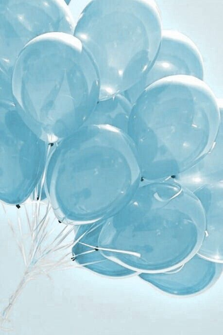
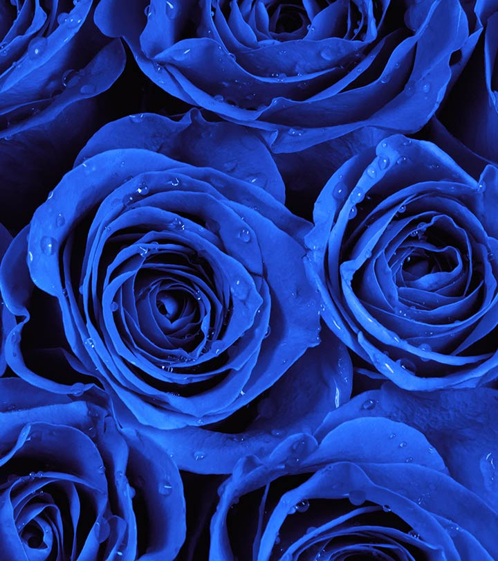
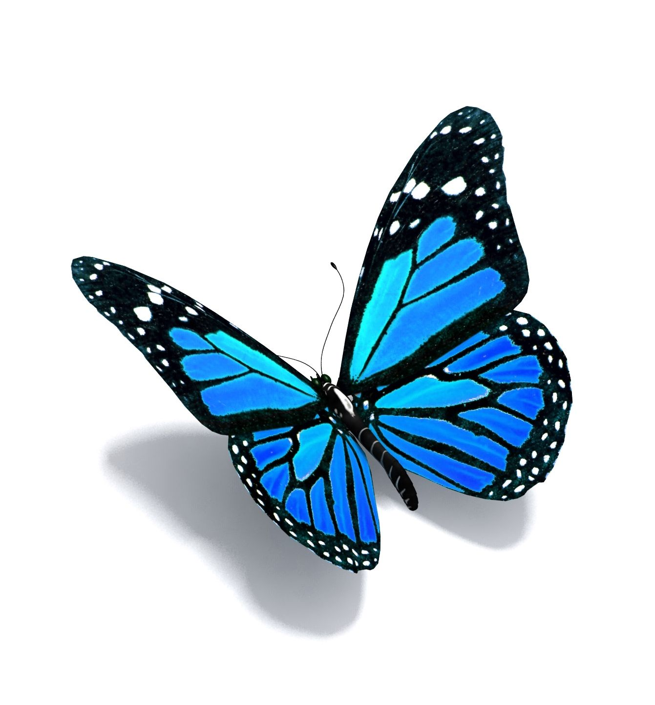

Welcome to My Webpage About Me!
Hi! My name is Thenujah and I am a grade 9 student attending Victoria Park Colligate Institue. I have created webpage so people could
get to know me better. Welcome to my webpage!
Here you will be able to get to know me and my interests more. Click the different tabs in the bar above for different topics about me.
In this webpage I will be going over everything I enjoy doing on my spare time and some facts about me. As you can see in the top bar above the title
I'm going to be talking about some drawings, baking, and poetry. Altghough there are many things I love to do on my free time I chose to present
these three topics because they are all interesting to learn about in general. To get started, below are some facts about me.
  
Facts About Me:
Favourite Colour: Blue
Favourite Food: Pasta
Birthstone:Emrald
Zodiac Sign: Taurus
Favourite Flower: Roses
Favourite Instrument: Saxaphone